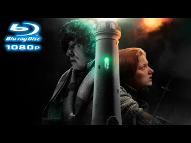
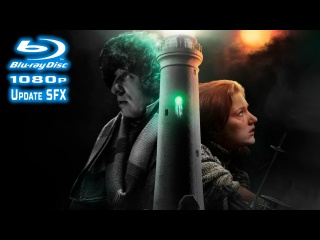
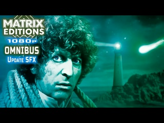
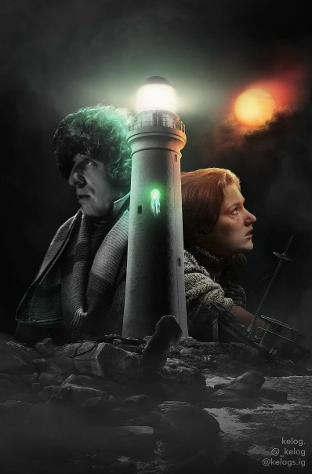
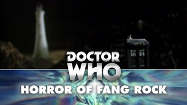

Субтитры: Русские и Английские |  |
|---|---|
с обновленными спецэффектами Субтитры: Русские и Английские |  |
с обновлением визуальных эффектов (cunningmunki) Субтитры: отсутствуют |  |
Horror of Fang Rock
Дата выхода: 3-24 сентября 1977
Формат: 4 эпизода по 25 мин.
|
ТАРДИС ошибается с местом назначения и высаживает Доктора с Лилой на острове Фанг-Рок у побережья Англии — там, на ветреном утёсе, стоит одинокий маяк, а в тумане мерцает что-то, не похожее на свет. Вскоре один из смотрителей погибает, и становится ясно: убийца проникает внутрь. Инопланетная форма жизни — рутианский охотник — затесалась на Землю после стычки со своим врагом, и теперь маяк превращается в западню, где каждый этаж — новая ловушка, а каждый гость, прибывший с тонущего корабля, — очередная жертва. Камерный, клаустрофобный хоррор в духе «Десяти негритят»: замкнутое пространство, угасающая лампа и тварь, подбирающаяся в тумане.
 VHS - июль 1998 |  DVD - 17 января 2005 |  Blu-ray - 18 марта 2024 * Версия в нашей группе |
|---|


